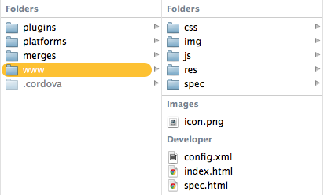

Apps Híbridos
Com Phonegap
Criado por Tiago Braga / @tiagobraga / contato@tiagobraga.cc
Ah mlk!
Tiago Braga, 26 anos(Até o dia 24 de Fevereiro)
Sou Desenvolvedor Web, com 7 anos de mercado.
Trabalhei na Plan B por quase 4 anos e atualmente trabalho na JCHEBLY, desenvolvendo para a Surface / PixelSense com C#.
Jabá Número 1
CEP

Jabá Número 2
Smiller

Para começar... O que é um App Híbrido?
Um App Híbrido não utiliza de linguagem nativa do dispositivo para funcionar, ele usa tecnologias como HTML, CSS e JAVASCRIPT para o seu desenvolvimento.
De certa forma, eles podem ser considerados nativos, pois utilizam uma parte nativa para comunicação (WebView).
Mas e aí, o que tem o Nativo melhor que o Híbrido?
- Velocidade - Acesso direto ao Sistema Operacional;
- Interface - Se quiser que seu App já tenha navegação nativa do SO;
- Cache - 'Acesso ilimitado'.
E o Híbrido...
- Desenvolvimento para qualquer Plataforma;
- Custo de Desenvolvimento - Um Código, N plataformas;
- Manutenção - Tem front-end no mercado? :D ;
- Debug - Podendo ser rodado normalmente no Browser.
Uai... Seu Jabá com Phonegap tá meio fraco... Você não tem nenhum App Híbrido?
"Vou te mostrar um App que fiz, tá bom?! :D"
Uma das formas de criar Apps Híbridos com as tecnologias que já conhecemos, como: HTML5, CSS3 e JAVASCRIPT
É um framework open source e disponibiliza para o desenvolvedor uma API, que você pode acessar por exemplo, a lista de contatos do dispositivo.
E ainda podemos usar...
... além dos 'plugins' já conhecidos.
Então... Vamos dar uma espiadinha de como o Phonegap funciona?
Linha de Comando
Se você já tiver Node.js instalado na sua máquina,
digite o sequite comando:
Passo 1*
$ npm install -g phonegap
Comando que instala o Phonegap no pacote do Node.
* Todos os DetalhesSeu primeiro App Híbrido com Phonegap
Antes, escolha seu diretório e digite o seguinte comando:
Passo 2*
$ phonegap create hello com.example.hello HelloWorld
- hello: É o nome do seu diretório;
- com.example.hello: Namespace do seu Aplicativo;
- HelloWorld: É o nome do seu Aplicativo.
Projeto Bruto
Esse é seu projeto bruto. Daqui pra frente, você é que manda.
Agora vamos fazer o Build para iOS.
Build
$ phonegap build ios
Instalação
$ phonegap install ios
Sou Chevrolet
app Híbrido
UI - Interface
Tripcase
Untappd

Além do Phonegap
Desenvolvimento mobile baseado em um SDK JAVASCRIPT.
DocumentaçãoAlém do Phonegap
Como já existia o Sencha ExtJS para criar aplicações com interface rica, foi desenvolvido o Sencha Touch, para que os desenvolvedores pudessem criar aplicações Mobile em HTML5.
Documentação